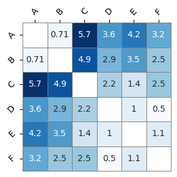

import warnings
warnings.filterwarnings('ignore')
import numpy as np
data = np.array( [ [1.0, 1.0],
[1.5, 1.5],
[5.0, 5.0],
[3.0, 4.0],
[4.0, 4.0],
[3.0, 3.5] ])
names = ['A','B','C','D','E','F']
%matplotlib inline
import matplotlib.pyplot as plt
import seaborn as sns
fig, ax = plt.subplots(figsize=(3,3), tight_layout=True)
ax.scatter(data[:,0], data[:,1]);
for l, (x,y) in zip(names,data):
ax.text(x+.2,y, l)
ax.set_xlim([0,6])
ax.set_ylim([0,6])
---------------------------------------------------------------------------
ModuleNotFoundError Traceback (most recent call last)
Cell In[2], line 3
1 get_ipython().run_line_magic('matplotlib', 'inline')
2 import matplotlib.pyplot as plt
----> 3 import seaborn as sns
5 fig, ax = plt.subplots(figsize=(3,3), tight_layout=True)
6 ax.scatter(data[:,0], data[:,1]);
ModuleNotFoundError: No module named 'seaborn'
from scipy.spatial.distance import pdist, squareform
D = squareform(pdist(data, metric="euclidean"))
np.fill_diagonal(D, np.nan)
def plot_D(D, ax):
sns.heatmap(D, annot=True, cmap="Blues", cbar=False,
linecolor="gray", linewidth=.5, clip_on=False,
ax=ax)
ax.set_yticklabels(names,rotation=45)
ax.set_xticklabels(names,rotation=45)
ax.xaxis.tick_top()
fig, ax = plt.subplots(figsize=(3,3), tight_layout=True)
plot_D(D, ax)

def merge_clusters(D, names):
Ci, Cj = np.unravel_index( np.nanargmin(D), D.shape)
print ("Merging",names[ Ci], "with", names[ Cj ] )
# update clusters
names[Ci]+= "+"+names[Cj]
names[Cj] = ""
D[Ci, :] = D[:, Ci] = np.nanmin( [D[:, Ci], D[:, Cj]], axis=0)
D[:, Cj] = D[Cj, :] = np.nan
D[Ci,Ci] = np.nan
while not np.isnan(D).all():
fig, ax = plt.subplots(1, 2, figsize=(6,3), tight_layout=True)
plot_D(D, ax[0])
merge_clusters(D, names)
plot_D(D, ax[1])
Merging D with F
Merging A with B
Merging D+F with E
Merging C with D+F+E
Merging A+B with C+D+F+E